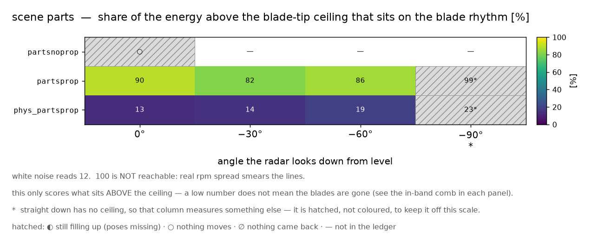
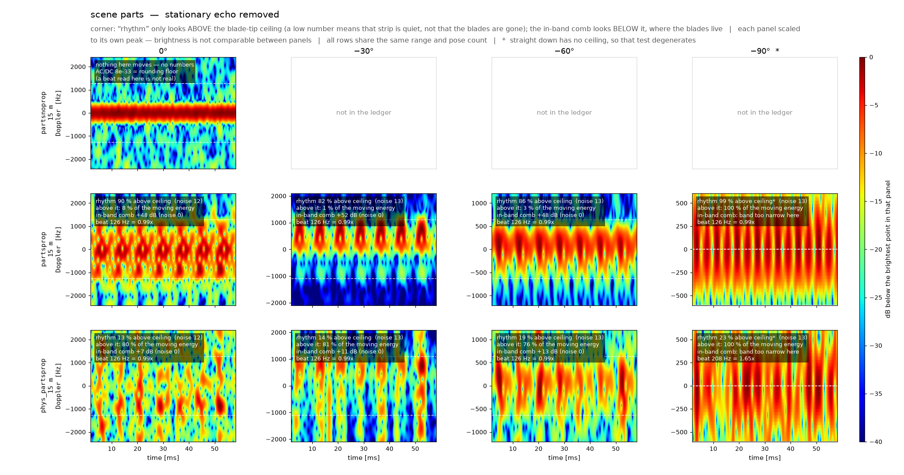
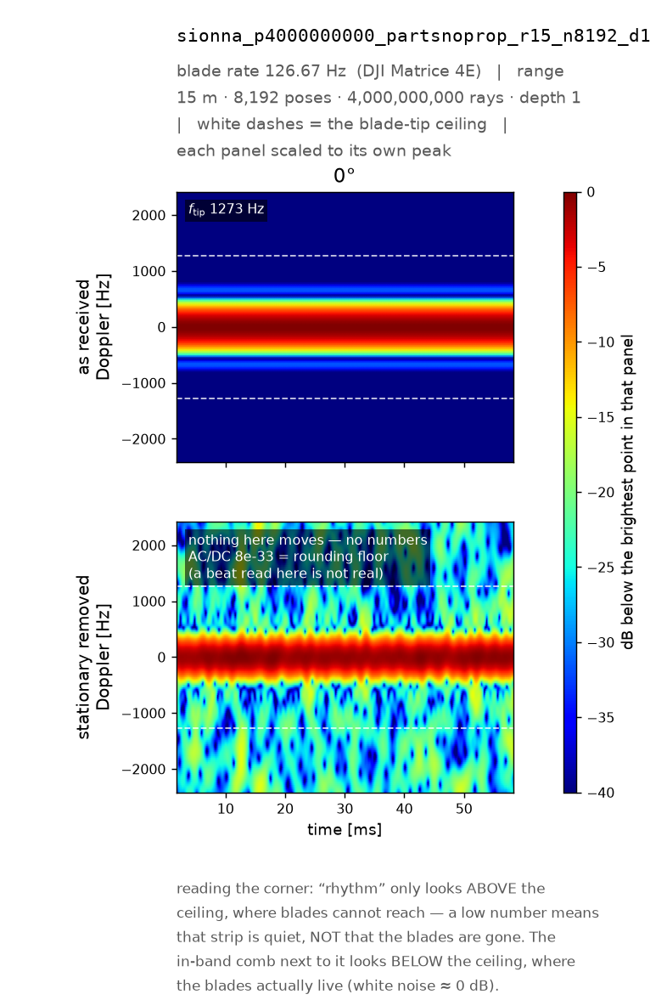
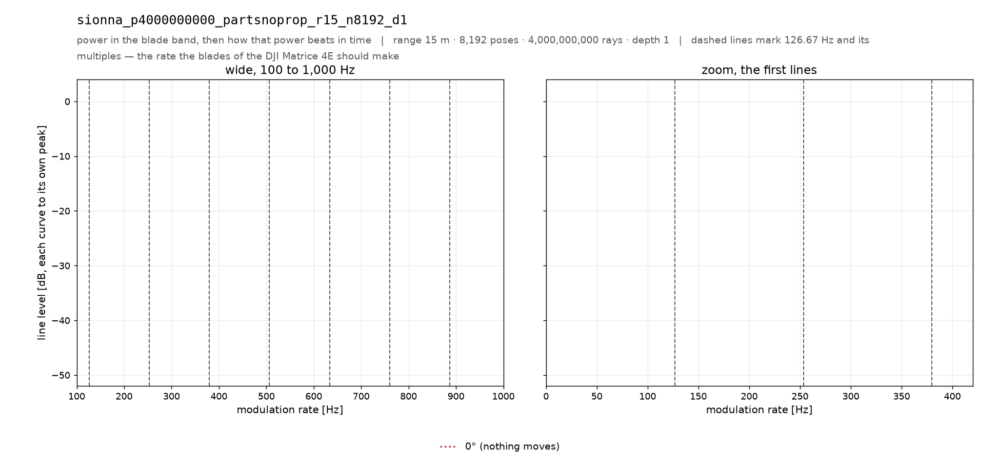
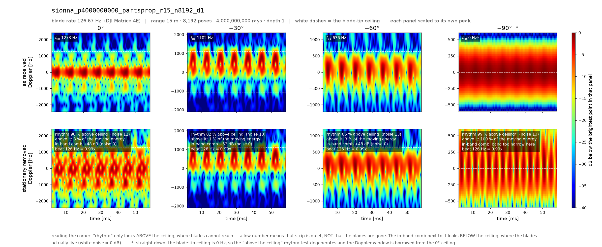
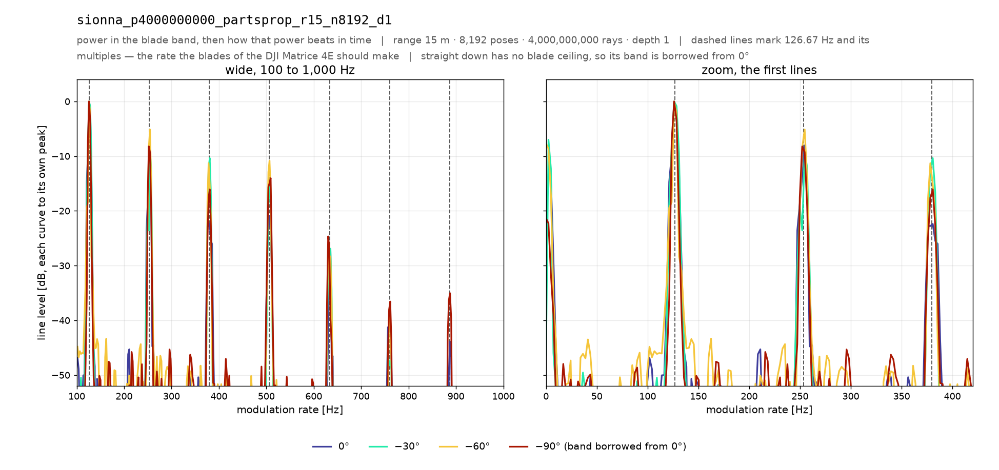
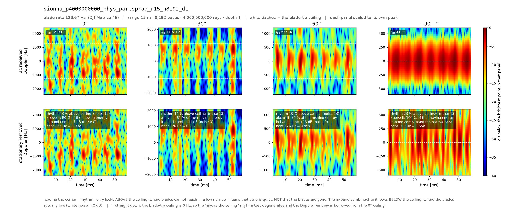
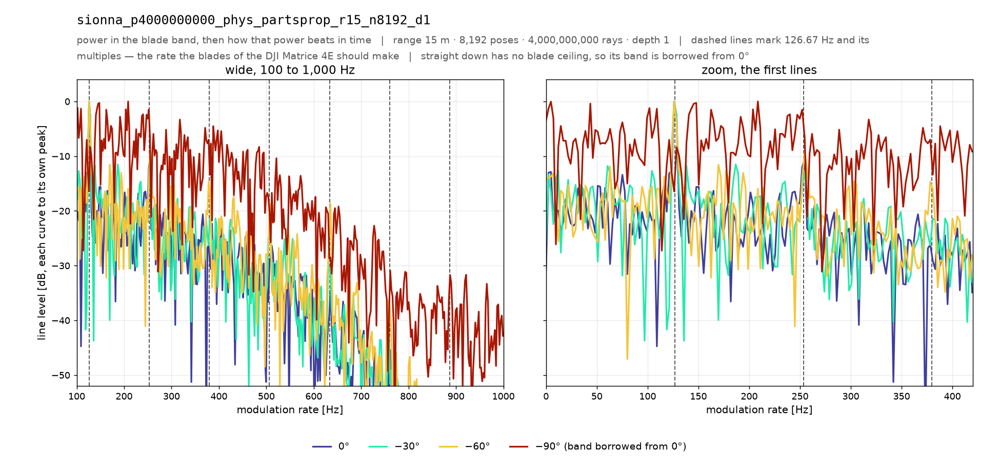

장면에서 부품을 빼 본 판이다. 프로펠러만 남기거나, 프로펠러만 뺀다. 날개 무늬를 만드는 것이 정말 프로펠러인지 귀속시킨다.
sionna_p4000000000_phys_partsprop_r15_n8192_d1) 에서 89.7 %(sionna_p4000000000_partsprop_r15_n8192_d1) 까지 벌어진다 — 폭 77.0 %p 는 격자 흔들림 밴드 21.8 %p 밖이라 차이가 살아 있다.sionna_p4000000000_partsprop_r15_n8192_d1 ↔ sionna_p4000000000_r15_n8192_d1)을 같은 앙각 3 칸에서 빼면 리듬 몫 차이가 가장 큰 곳이 76.6 %p(평균 +25.7 %p) — 격자 흔들림 밴드 21.8 %p 밖이라 차이가 살아 있다. 뺀 칸 1 개(잣대 퇴화 · 수를 낼 자격 없음)는 셈에서 제외했다. ⭐짝이 있는 팔은 2 개인데 그중 밴드 밖은 1 개다 — 여기 적은 것은 그중 가장 큰 한 짝일 뿐이니 주제 전체의 결론으로 읽지 마라(팔마다 링크를 달아 두었다).전부 outputs/md_atlas_index.json 과 원장에서 계산한 수다.
«격자 흔들림 밴드»는 리듬 몫 21.8 %p — 그 안의 차이는 판정하지 않는다.

— 는 원장에 그 칸이 없다는 뜻이고, 빗금 친 칸은 색눈금에 올리면 안 되는 칸이다 — −90° 열(잣대 퇴화) · ◐ 자세가 덜 참 · ○ 안 움직임 · ∅ 에코 없음. ⚠이 지도는 상한 위만 보는 잣대라 낮은 값이 «날개가 없다»는 뜻이 아니다.
p1 · p2)으로 나뉜다.왼쪽이 마이크로도플러 맵(가로 시간 · 세로 도플러), 오른쪽이 블레이드 대역 에너지(점선이 예측 박자의 정수배)다. 그림을 클릭하면 원본 크기로 열린다. 읽는 법이 헷갈리면 대문의 «어떻게 읽나» 로 돌아가면 된다.
엔진 Sionna PathSolver · 거리 15 m · 자세 8,192 개 · 광선 40 억 발 · 반사 깊이 1 · 스위치 물리 끔 · 장면 프로펠러 뺀 나머지 · 표적 DJI Matrice 4E · 박자 126.667 Hz
↔ 한 축만 다른 짝 팔 sionna_p4000000000_r15_n8192_d1 다만 비교할 수 있는 칸이 없다 — 두 팔이 함께 가진 앙각의 칸이 «되돌아온 것 없음»·«자세가 덜 참»·«잣대 퇴화» 중 하나라 셈에서 뺐다.


| 앙각 | 날개끝 상한 f_tip [Hz] | 리듬 몫 [%] 상한 위만 · 선=그 칸의 백색잡음 | 그 칸 백색잡음 [%] | 상한 위 에너지 [%] | 빗살 대비 [dB] 상한 아래 | 박자 [Hz] | 박자÷예측 | 움직이는 전력 [dB] | 움직이는 몫 [%] | 자세 수 | 원장 레벨 [dB] | 표시 |
|---|---|---|---|---|---|---|---|---|---|---|---|---|
| 0° | 1273 | — | 12.5 | — | — | — | — | — | — | 8,192 | −63.23 | ○ 움직이는 것 없음 |
표 읽는 법 — ⭐리듬 몫은 날개끝 상한 «위»만 재는 수다. 막대 안 세로선은 그 칸의 백색잡음 값이고(팔마다 다르다 — 옆 열에 적었다), 그보다 낮다고 «날개가 없다»는 뜻이 아니다. 그 판단은 빗살 대비와 함께 한다 — 그것은 상한 아래(날개가 실제로 사는 자리)에서 «정수배 자리 ÷ 그 사이 자리» 전력비이고 백색잡음이 0 dB 다. 상한 위 에너지는 움직이는 힘 중 몇 %가 상한 위에 있나로, 리듬 몫이 낮은 까닭이 «위가 조용해서»인지 «위가 잡동사니로 가득 차서»인지를 가른다. 박자÷예측이 1.00 이면 예측한 자리에 봉우리가 섰다는 뜻이고 2.00 이면 두 배 자리다 — ⚡튐 딱지가 붙은 칸의 박자는 회전이 아니라 튄 자세 몇 개의 간격이다. 움직이는 전력과 원장 레벨은 dB 라 같은 팔 안에서만 비교한다. 박자는 전 구간으로 재고 맵 그림은 20~80 ms 창만 그린다.
엔진 Sionna PathSolver · 거리 15 m · 자세 8,192 개 · 광선 40 억 발 · 반사 깊이 1 · 스위치 물리 끔 · 장면 프로펠러만 · 표적 DJI Matrice 4E · 박자 126.667 Hz
↔ 한 축만 다른 짝 팔 sionna_p4000000000_r15_n8192_d1 같은 앙각 3 칸에서 리듬 몫 차이는 최대 76.6 %p(평균 +25.7 %p) — 격자 흔들림 밴드 21.8 %p 밖이라 차이가 살아 있다. 뺀 칸 1 개(잣대 퇴화·수를 낼 자격 없음).


| 앙각 | 날개끝 상한 f_tip [Hz] | 리듬 몫 [%] 상한 위만 · 선=그 칸의 백색잡음 | 그 칸 백색잡음 [%] | 상한 위 에너지 [%] | 빗살 대비 [dB] 상한 아래 | 박자 [Hz] | 박자÷예측 | 움직이는 전력 [dB] | 움직이는 몫 [%] | 자세 수 | 원장 레벨 [dB] | 표시 |
|---|---|---|---|---|---|---|---|---|---|---|---|---|
| 0° | 1273 | 12.5 | 8.1 | +48.4 | 126.1 | 0.995 | −146.68 | 23.3 | 8,192 | −141.12 | 정상 | |
| −30° | 1102 | 12.6 | 1.2 | +51.8 | 126.1 | 0.995 | −135.47 | 94.7 | 8,192 | −136.97 | 정상 | |
| −60° | 636 | 12.6 | 3.1 | +48.3 | 126.1 | 0.995 | −129.55 | 80.7 | 8,192 | −129.79 | 정상 | |
| −90° | 0 | 12.6 | 100.0 | — | 126.1 | 0.995 | −132.67 | 0.263 | 8,192 | −106.88 | ▲ 잣대 퇴화↺ 대역 빌림 |
표 읽는 법 — ⭐리듬 몫은 날개끝 상한 «위»만 재는 수다. 막대 안 세로선은 그 칸의 백색잡음 값이고(팔마다 다르다 — 옆 열에 적었다), 그보다 낮다고 «날개가 없다»는 뜻이 아니다. 그 판단은 빗살 대비와 함께 한다 — 그것은 상한 아래(날개가 실제로 사는 자리)에서 «정수배 자리 ÷ 그 사이 자리» 전력비이고 백색잡음이 0 dB 다. 상한 위 에너지는 움직이는 힘 중 몇 %가 상한 위에 있나로, 리듬 몫이 낮은 까닭이 «위가 조용해서»인지 «위가 잡동사니로 가득 차서»인지를 가른다. 박자÷예측이 1.00 이면 예측한 자리에 봉우리가 섰다는 뜻이고 2.00 이면 두 배 자리다 — ⚡튐 딱지가 붙은 칸의 박자는 회전이 아니라 튄 자세 몇 개의 간격이다. 움직이는 전력과 원장 레벨은 dB 라 같은 팔 안에서만 비교한다. 박자는 전 구간으로 재고 맵 그림은 20~80 ms 창만 그린다.
엔진 Sionna PathSolver · 거리 15 m · 자세 8,192 개 · 광선 40 억 발 · 반사 깊이 1 · 스위치 물리 전부 켬 · 장면 프로펠러만 · 표적 DJI Matrice 4E · 박자 126.667 Hz
↔ 한 축만 다른 짝 팔 sionna_p4000000000_phys_r15_n8192_d1 같은 앙각 3 칸에서 리듬 몫 차이는 최대 4.2 %p(평균 +1.5 %p) — 격자 흔들림 밴드 21.8 %p 안이라 판정 불가. 뺀 칸 1 개(잣대 퇴화·수를 낼 자격 없음).


| 앙각 | 날개끝 상한 f_tip [Hz] | 리듬 몫 [%] 상한 위만 · 선=그 칸의 백색잡음 | 그 칸 백색잡음 [%] | 상한 위 에너지 [%] | 빗살 대비 [dB] 상한 아래 | 박자 [Hz] | 박자÷예측 | 움직이는 전력 [dB] | 움직이는 몫 [%] | 자세 수 | 원장 레벨 [dB] | 표시 |
|---|---|---|---|---|---|---|---|---|---|---|---|---|
| 0° | 1273 | 12.5 | 80.0 | +7.4 | 126.1 | 0.995 | −119.05 | 97.9 | 8,192 | −123.93 | 정상 | |
| −30° | 1102 | 12.6 | 81.1 | +10.6 | 126.1 | 0.995 | −130.53 | 99.9 | 8,192 | −138.33 | 정상 | |
| −60° | 636 | 12.6 | 75.5 | +12.6 | 126.1 | 0.995 | −129.06 | 88.8 | 8,192 | −132.64 | ◇ 고립도 잡음판 밖 | |
| −90° | 0 | 12.6 | 100.0 | — | 208.5 | 1.646 | −122.57 | 19 | 8,192 | −115.91 | ▲ 잣대 퇴화↺ 대역 빌림 |
표 읽는 법 — ⭐리듬 몫은 날개끝 상한 «위»만 재는 수다. 막대 안 세로선은 그 칸의 백색잡음 값이고(팔마다 다르다 — 옆 열에 적었다), 그보다 낮다고 «날개가 없다»는 뜻이 아니다. 그 판단은 빗살 대비와 함께 한다 — 그것은 상한 아래(날개가 실제로 사는 자리)에서 «정수배 자리 ÷ 그 사이 자리» 전력비이고 백색잡음이 0 dB 다. 상한 위 에너지는 움직이는 힘 중 몇 %가 상한 위에 있나로, 리듬 몫이 낮은 까닭이 «위가 조용해서»인지 «위가 잡동사니로 가득 차서»인지를 가른다. 박자÷예측이 1.00 이면 예측한 자리에 봉우리가 섰다는 뜻이고 2.00 이면 두 배 자리다 — ⚡튐 딱지가 붙은 칸의 박자는 회전이 아니라 튄 자세 몇 개의 간격이다. 움직이는 전력과 원장 레벨은 dB 라 같은 팔 안에서만 비교한다. 박자는 전 구간으로 재고 맵 그림은 20~80 ms 창만 그린다.
{kind=link}
{kind=link}
{kind=link}
{kind=link}
{kind=link}
{kind=link}
{kind=link}
{kind=link}